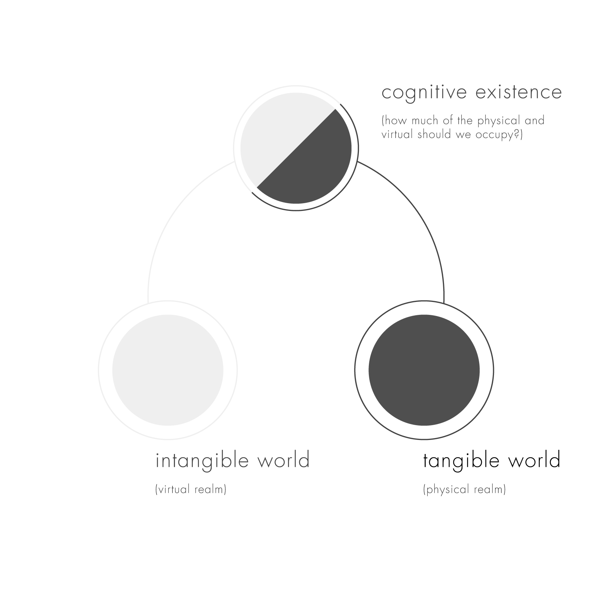
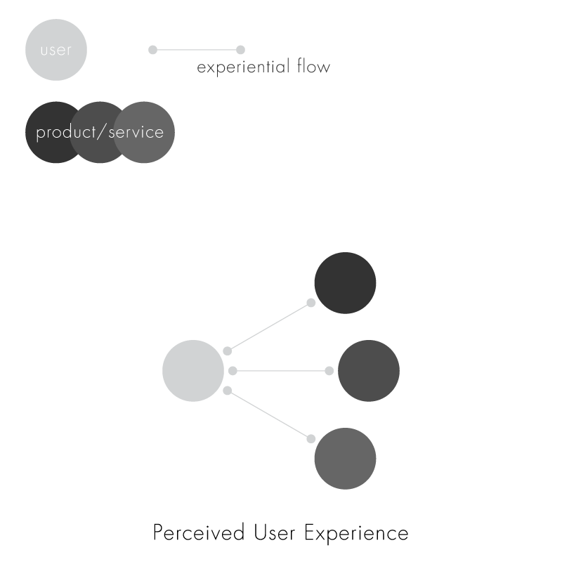
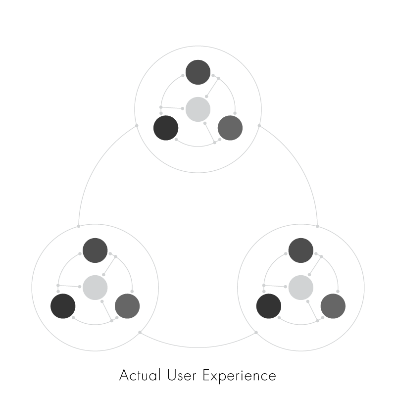
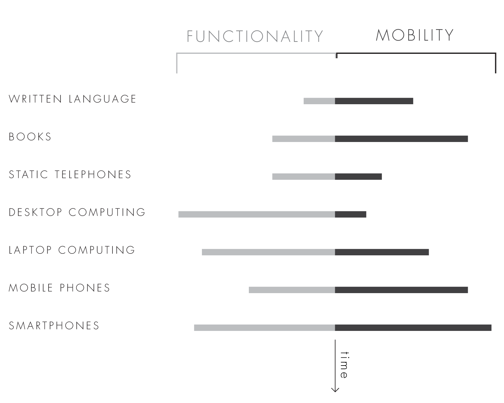
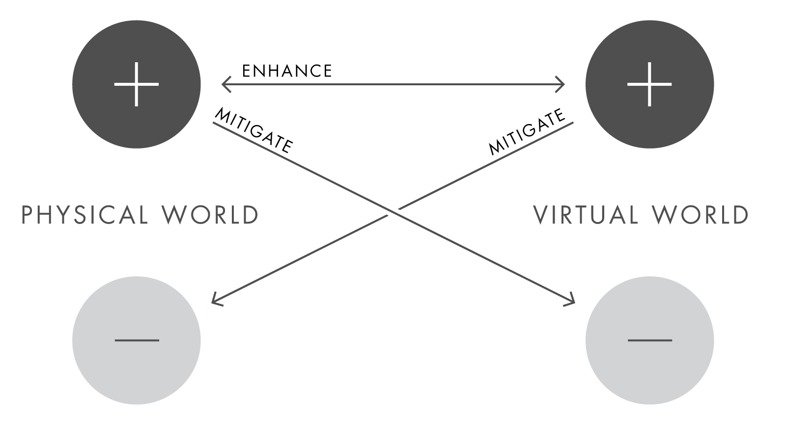

user, user, user.
User experience, user interface, the user. Everyone doing anything these days is always talking about the importance of the user. I think the way we think about designing experiences these days is generally headed in the right direction, delighting users with beautiful and purposeful animations and functions.
But I also cannot help but feel that we have abused it. How many times have you sat down for a meal with someone who was screwing around with Candy Crush, chatting with friends on Facebook, or abusing the rubber band scrolls on iOS? We are keen to emphasize that smartphones and other socially intrusive tech have taken over our lives, but actually these products and experiences exploit (knowingly or unknowingly) human flaws by providing a more pleasurable short-term stimuli. Similar analogues would be reading books at the dinner table, talking to someone over the phone, or even daydreaming during class.

So it seems like there is a tug-of-war between the physical and the virtual realm to grab our attention, but in what way can technology marry physical and virtual experiences together to create something positive that neither can do without the other?
design models for perspective
To help answer the question above, I designed several models that could help put things into perspective.
1. a network of users

We often like to think of how to create a better user experience, but how about creating a better experience for users? Whether we like it or not, we are networked and social animals, and experiences flow through this network rather than a singular product influencing one person one at a time.
2. technologies that have transformed social paradigms

The advantages of owning a smartphone is undisputed; the intuitive interface, access to desktop-class applications, the unique apps that live within the mobile space, and the ease of use, the list goes on and on. But as a mobile platform that has almost all the functionalities that traditional desktops used to offer, this can be an intrusive piece of tech to our lives. An argument can be made (which I did earlier) that all of the aforementioned tech advancements in the figure above negatively impact the intrusion on our tangible physical lives, but smartphones are an especially special exception as it can emulate and act as a surrogate for social experiences in a manner that all the others could not due to its high mobility, relatively high computing power, among other factors.
It is difficult to blame the average person for using smartphones all the time in socially intrusive settings. It has its many benefits which is why we use it in the first place. But what is the line between how much we should tolerate intrusion-causing technology and how much should we focus on our moments based in physical reality? I feel like this is why the concept of user experience design is shallow sometimes as it tends to focus on the direct relationship between a person and its device without consideration for the user and its environment…
3. a framework for experiential innovation

So, the virtual and physical world have both its benefits, and its pitfalls in a social context. But when designing a product/service, I believe you can mitigate or even eliminate the negatives of both sides using the positives of the other in certain situations if designed well.
3a. Dating Industry
Take the dating industry for example. You can either use an online dating service like Tinder or Happn, or you actually go and meet someone in a bar, nightclub, or whatever setting. When approaching a stranger to talk to, there’s an inherent feeling of risk due to our evolutionary trait of avoiding the unknown so we don’t get killed.
I think that there exists a way to lower this social barrier using an indicator that sends subtle notifications that the person next to you is interesting relative to your interests and personality. Of course, this idea would be extremely hard to scale to something like Tinder, but I could see it working when implemented in controlled environments where meeting people is the point and time is valuable. I collaborated with a bunch of people from MIT and HKU in the MIT Kickstart Hackathon to design a concept similar to this which I’ll write about in my next post.
3b. Augmented Reality and Social Gaming
Last summer, we witnessed the viral explosion of Pokémon Go. It was interesting to see especially in Hong Kong, so many people walking outside and playing this game en masse (pretty much the entire city, even my 60 year old aunt played it) together. To combine a well known brand everyone adores and use it to augment our physical surrounding to get other people to explore more, and to witness introverted and disabled people who would otherwise be stuck in their homes to come out and play it with their families and interact with others over a shared passion is something well worth applauding. The execution was questionable as the interface was simple, buggy, and it arguably got more people stuck on their phones, but for the first time have we witnessed so much excitement for this concept.
tldr
I argue that values and user experiences should not just be thought of as single packets of requirements and metrics to fulfill, but rather as a network, and to think of user experience as experience for a shared network of people. Secondly, I think there is a large space for innovation in augmented reality, in the sense that applications and technology can serve us better in the physical space, rather than us being slaves to it in the virtual space.